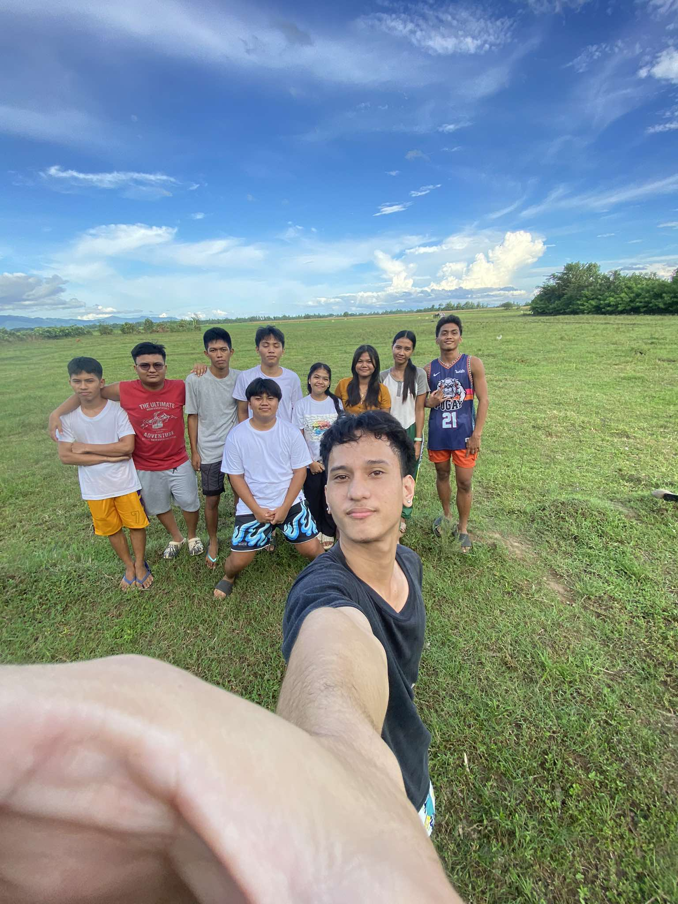
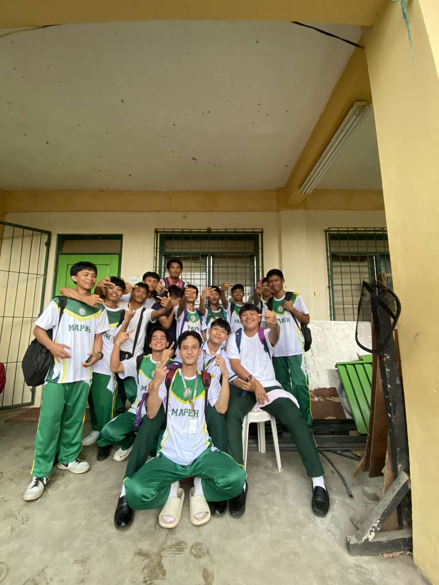

MY MEMORIES
Elementary


This is my childhood full of fun and carefree actions — no problems and no worries in life.
High School
This is my high school picture — filled with good and beautiful memories that I’ll cherish forever.
Friends
 This group picture with my friends shows how fun and meaningful friendship can be. Through them, I gained different experiences and inspirations in life.